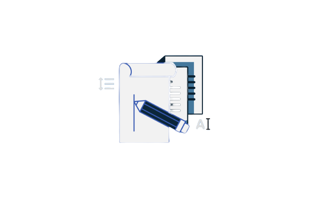
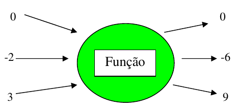
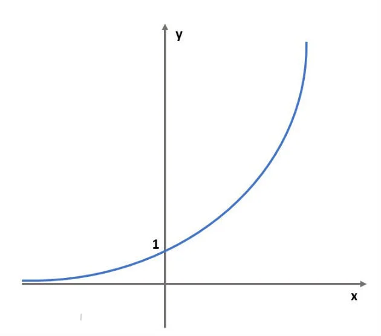

O logaritmo é uma operação matemática diretamente relacionada com as
equações exponenciais. Nele buscamos encontrar o expoente que faz com a base seja
igual ao que chamamos de logaritmando.
Veja o exemplo abaixo:
Sabemos que 2³ = 8
Então chamamos de Log₂ 3 = 8
Isso significa que a resposta de um logaritmo é um expoente.
Confira um video breve sobre os Logaritmos:
Canal: Descomplica
Vejamos outro exemplos:
>
Quanto é o Log₄ 64? Ou seja, o expoente do 4 para resultar 64
Podemos usar um raciocínio básico
4ⁿ = 64
4ⁿ = 4⁴
x = 4
1.2 Algumas considerações sobre os Logaritmos que podemos obter:
O logaritmo pode se transformar numa equação exponencial;
Logaritmando não pode ser zero nem número negativo;
A base não pode ser zero, nem 1, nem negativa;
Para o cálculo de alguns logaritmos, a transformação em equação
exponencial não ajuda, então usaremos outros métodos.
2. Funções Quadráticas
2.1 O que são as Funções Quadráticas?
Função Quadrática ou Função do 2º grau é uma função 𝑓: ℝ → ℝ
definida por
𝑓(𝑥) = ax² + bx + c
Os coeficientes 𝑎, 𝑏 𝑒 𝑐 são números reais e o coeficiente 𝑎 precisa ser, necessariamente,
diferente de zero;
O gráfico de uma função quadrática será sempre uma parábola com eixo de simetria paralelo ao eixo dos y;
Seu domínio é D(f) = ℝ, mas dependendo da situação contextualizada envolvida o domínio pode mudar;
A imagem dependerá da concavidade e do vértice da parábola.
Usamos 4 passos IMPORTANTES para uma construção eficiente do gráfico da função, são eles:
Usamos 4 passos IMPORTANTES para uma construção eficiente do gráfico da função, são eles:
1° - Analisar a concavidade;
2° - Calcular as raízes reais, se existirem, ou seja f(x) = 0;
3° - Determinar o ponto de interseção com o eixo y;
4° - Calcular as coordenadas do vertice.
2.2 Veja alguns exemplos e um video resolvendo alguns exercicios:
Exemplo 1.
Exemplo 2.
Exemplo 3.


Dificuldades
1. Funções Exponenciais
1.1 O que são Funções Exponenciais?
Função Exponencial é aquela que a variável está no expoente e cuja base é sempre maior que zero e diferente de
um.
Essas restrições são necessárias, pois 1 elevado a qualquer número resulta em 1. Assim, em vez de exponencial,
estaríamos diante de uma função constante.
Além disso, a base não pode ser negativa, nem igual a zero, pois para alguns expoentes a função não estaria
definida.
Por exemplo, a base igual a - 3 e o expoente igual a 1/2. Como no conjunto dos números reais não existe raiz
quadrada de número negativo, não existiria imagem da função para esse valor.
Exemplos:
f(x) = 4ⁿ
f(x) = (0,1)ⁿ
f(x) = (2/3)ⁿ
Nos exemplos acima 4, 0,1 e 2/3 são as bases, enquanto n é o expoente.
1.2 Gráfico da Função Exponenciais
Como podemos entender melhor?
>O gráfico desta função passa pelo ponto (0,1), pois todo número elevado a zero é igual a 1. Além disso, a curva
exponencial não toca no eixo x.
Na função exponencial a base é sempre maior que zero, portanto a função terá sempre imagem positiva. Assim
sendo, não apresenta pontos nos quadrantes III e IV (imagem negativa).
Confira abaixo o exemplo do gráfico:

2. Funções Modulares
2.1 O que são Funções Modulares?
"Função modular é a função f: A→ B, em que a lei de formação contém, pelo menos, uma variável dentro do módulo. O
módulo ou valor absoluto de um número é representado por |n|, que gera como resultado o valor absoluto, ou seja,
um número real positivo.
Existem diferentes tipos de funções modulares, a depender do tipo de equação que se encontra dentro do módulo,
podendo ser uma equação do 1º grau, do 2º grau, entre outros tipos de expressões algébricas. Encontramos o valor
numérico de uma função
quando substituímos a variável pelo valor desejado, então o valor numérico da função quando x = k é igual a
f(k). Durante o estudo da função, a representação gráfica também é muito importante para analisarmos o
comportamento da variável.
Confira abaixo alguns exemplos:
f(x) = |x|
f(x) = |x² – 3x + 5|
h(x) = |sen (x)|
i(x) = |2x + 1| – 4"
>2.2 Propriendades da Função Moodular
Quando estudamos função modular, é importante compreendermos as principais propriedades do módulo de um número,
vejamos as propriedades a seguir:
Para compreender as propriedades, considere n e m como dois números reais.
1ª propriedade: o módulo de um número real é igual ao módulo do seu oposto.
|n| = |-n|
2ª propriedade: o módulo do produto é igual ao produto dos módulos.
|n · m| = |n| · |m|
3ª propriedade: o módulo da soma de dois números é menor ou igual à soma do módulo de cada um deles.
|n + m| ≤ |n| + |
4ª propriedade: o módulo da diferença é maior ou igual à diferença dos módulos.
|n – m| ≥ |n| – |m|
5ª propriedade: o módulo do quadrado de n é igual ao módulo de n ao quadrado.
|n²| = |n|²
Confira a seguir, uma breve video aula sobre as Funções Modulares